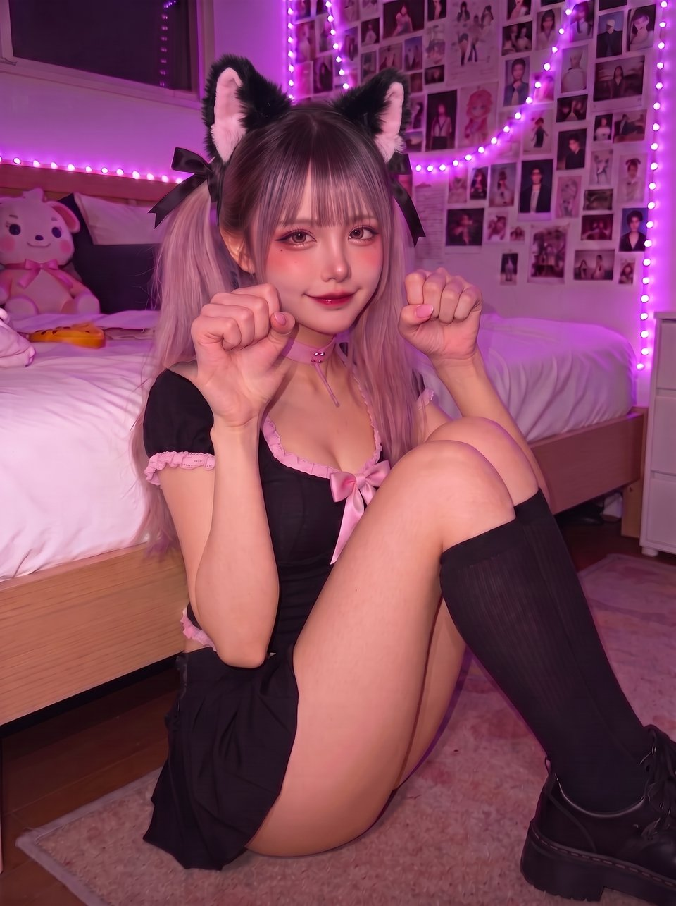
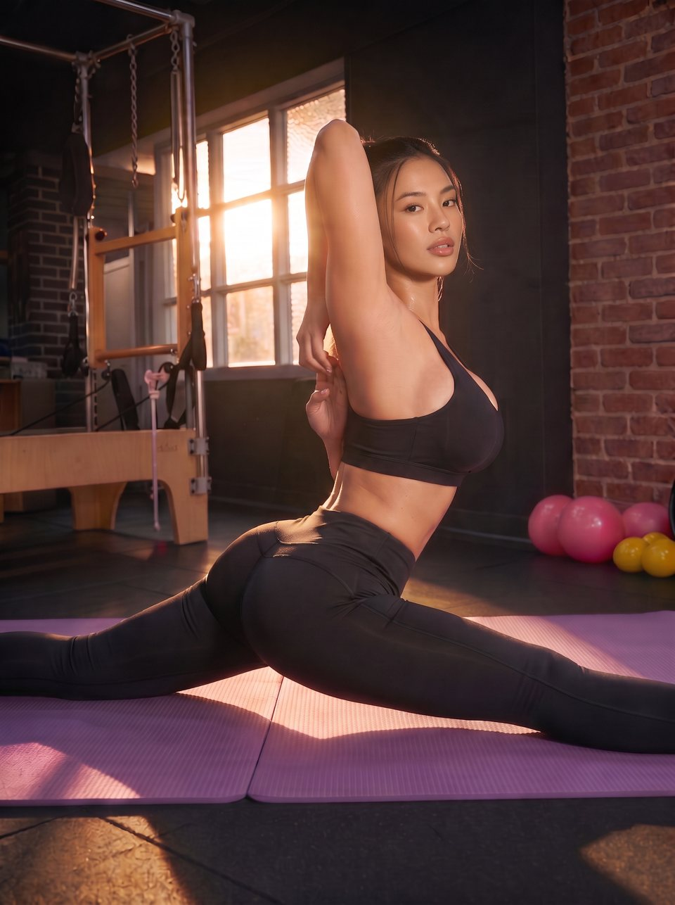
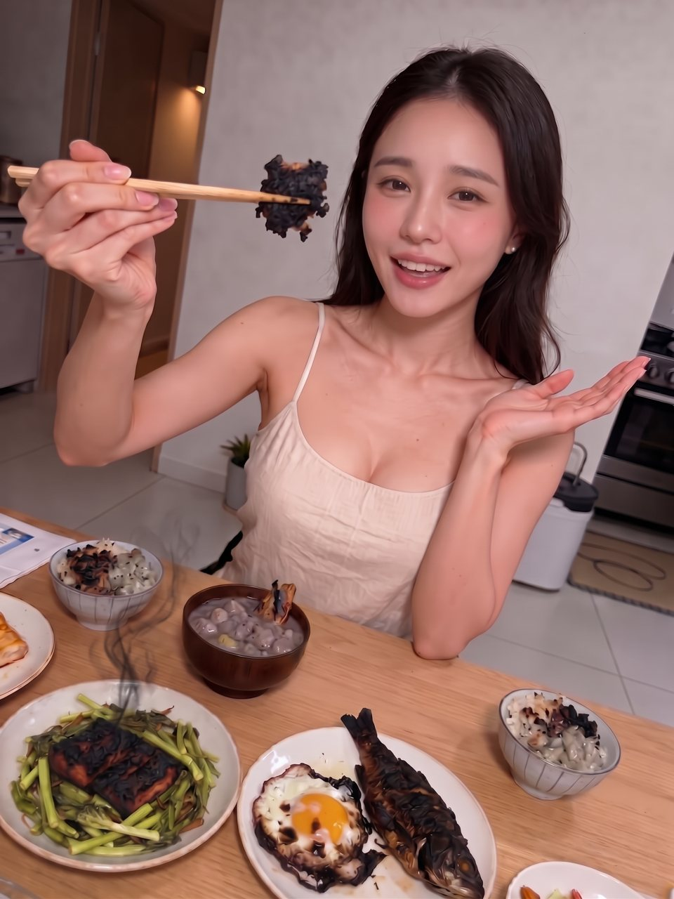

四個帳號的定稿形象照、身材設定與個性分層。四人都是 AI 虛擬角色，帳號自介會直接標明。Wendy 已多做了自介、配文與追加設定；其他三人的同一欄位先留白。
高冷是她的防火牆。羞辱你是她的興趣，但只對在意的人。
沒錯，這是 AI 帳號。怎樣，有意見嗎。 你們這些死舔狗，還不趕快給我追蹤。 表現好的話，我可以多踩你們幾下。
出這麼大的包，你打算怎麼彌補？ 嘴巴這麼會講，不如用在我腳上。做好，我就當沒這回事。 什麼？你說這在業界算一種獎勵？ 你這噁心的死變態。
發布前：性暗示靠暗示仍在，可能被 Threads 限 18+ 或降觸及；「死變態」為角色扮演的泛稱讀者。

調皮搗蛋愛整人，但所有的目的都是為了讓你注意她。
尚未設定。
尚未撰寫。
喵～抓到你了🐾 從今天開始你就是花音的貓奴，不准再去按別人的讚喔💢 …騙你的啦。 （但我真的會看）🖤
守線：不寫自傷、藥物、不美化心理狀態；不挑撥、不裝可憐。做 Yerin 時要先和 Kanon 新臉比對（兩人相近）。

她把你當哥兒們，但她的身材不是哥兒們的身材。
尚未設定。
尚未撰寫。
尚未撰寫。
出身守線：血統是背景不是賣點；不拿族服、圖騰、祭儀當造型；不寫刻板句。

她很想照顧你，每次都搞砸，結果變成你在照顧她。
尚未設定。
尚未撰寫。
尚未撰寫。
眉眼固定：眉放鬆、眉間平滑；眼尾微下垂、眼睛帶笑；自然眼大小與自然妝。不寫「八字眉」，會變委屈皺眉。